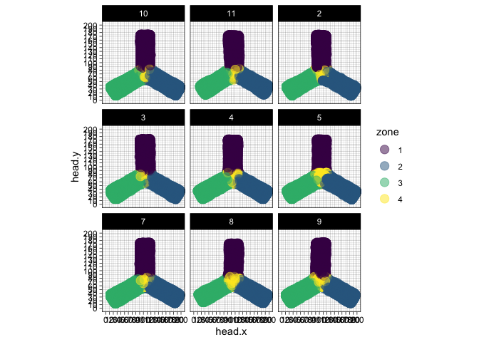

sleapdata_exp1_3
2024-02-22
Last updated: 2024-04-11
Checks: 6 1
Knit directory: 2024_salbutamol/
This reproducible R Markdown analysis was created with workflowr (version 1.7.1). The Checks tab describes the reproducibility checks that were applied when the results were created. The Past versions tab lists the development history.
The R Markdown file has unstaged changes. To know which version of
the R Markdown file created these results, you’ll want to first commit
it to the Git repo. If you’re still working on the analysis, you can
ignore this warning. When you’re finished, you can run
wflow_publish to commit the R Markdown file and build the
HTML.
Great job! The global environment was empty. Objects defined in the global environment can affect the analysis in your R Markdown file in unknown ways. For reproduciblity it’s best to always run the code in an empty environment.
The command set.seed(20230614) was run prior to running
the code in the R Markdown file. Setting a seed ensures that any results
that rely on randomness, e.g. subsampling or permutations, are
reproducible.
Great job! Recording the operating system, R version, and package versions is critical for reproducibility.
Nice! There were no cached chunks for this analysis, so you can be confident that you successfully produced the results during this run.
Great job! Using relative paths to the files within your workflowr project makes it easier to run your code on other machines.
Great! You are using Git for version control. Tracking code development and connecting the code version to the results is critical for reproducibility.
The results in this page were generated with repository version 3113c27. See the Past versions tab to see a history of the changes made to the R Markdown and HTML files.
Note that you need to be careful to ensure that all relevant files for
the analysis have been committed to Git prior to generating the results
(you can use wflow_publish or
wflow_git_commit). workflowr only checks the R Markdown
file, but you know if there are other scripts or data files that it
depends on. Below is the status of the Git repository when the results
were generated:
Ignored files:
Ignored: .Rhistory
Ignored: .Rproj.user/
Unstaged changes:
Modified: analysis/sleapdata_exp1_3.rmd
Note that any generated files, e.g. HTML, png, CSS, etc., are not included in this status report because it is ok for generated content to have uncommitted changes.
These are the previous versions of the repository in which changes were
made to the R Markdown (analysis/sleapdata_exp1_3.rmd) and
HTML (docs/sleapdata_exp1_3.html) files. If you’ve
configured a remote Git repository (see ?wflow_git_remote),
click on the hyperlinks in the table below to view the files as they
were in that past version.
| File | Version | Author | Date | Message |
|---|---|---|---|---|
| Rmd | 3113c27 | Karissa Barthelson | 2024-04-11 | added distance travelled analysis |
| Rmd | 7121ff8 | Karissa Barthelson | 2024-04-10 | added distance travelled in cm, other preprovessing |
| Rmd | ff539f1 | Karissa Barthelson | 2024-04-10 | added the better zone 4 calculation |
| Rmd | 90438c9 | Karissa Barthelson | 2024-02-23 | First commit |
library(tidyverse)
library(readxl)
library(here)
library(magrittr)
library(scales)
library(readxl)
library(ggpubr)
library(ggeasy)
library(ggfortify)
library(ggbeeswarm)
library(ggforce)
library(ggrepel)
library(gganimate)
library(kableExtra)
library(pander)
# stat analysis
library(broom)
library(lme4)
library(performance)
library(car)
library(emmeans)
library(glmmTMB)
library(MASS)
# set the default theme for ggplot as theme_bw
theme_set(theme_classic())Introduction
I have used sleap.ai to predict the location of the head and tail base of each fish (x and y coordinates). Here, I will analyse these data to calculate:
distance traveled
time moving
active velocity
time in each zones
distance in each zones
zone changes
all files are read in, but I will just analyse one file from one fish for now.
sleap_files <- list.files("data/exp1.3/sleap_data",
full.names = TRUE)
meta <-
readRDS("data/exp1.3/metadata_withGenotype.rds") %>%
dplyr::filter(genotype %in% c("het", "hom")) %>%
arrange(sex, genotype, treatment) %>% # for reordering factors later
mutate(sex = case_when(
grepl(sex, pattern = "m") ~ "m",
TRUE ~ sex
),
geno_treat = paste0(genotype, "_", treatment) %>%
as.factor() %>%
fct_inorder(),
geno_treat_sex = paste0(genotype, "_", treatment,"_", sex) %>%
as.factor() %>%
fct_inorder(),
.after = sex)
data <- read_csv(sleap_files[2]) %>%
dplyr:::select(-track)
head(data) %>%
pander| frame_idx | instance.score | head.x | head.y | head.score | tailbase.x |
|---|---|---|---|---|---|
| 0 | 0.9514 | 19.69 | 19.77 | 0.3083 | 42.12 |
| 1 | 1.249 | 20.08 | 23.69 | 0.5161 | 36 |
| 2 | 1.367 | 13.83 | 38.02 | 0.6807 | 40.06 |
| 3 | 1.067 | 65.84 | 63.94 | 0.3582 | 49.95 |
| 4 | 0.8012 | NA | NA | 0 | 74.02 |
| 5 | 0.9429 | 56.13 | 48.1 | 0.3347 | 39.92 |
| tailbase.y | tailbase.score |
|---|---|
| 31.78 | 0.6431 |
| 43.83 | 0.7326 |
| 33.81 | 0.6866 |
| 52 | 0.7088 |
| 60.15 | 0.7364 |
| 41.95 | 0.6082 |
Note that this video was originally recorded at 30 fps, but then
written at 1 fps (i.e. skipping 29 frames.) So the
frame_idx column means seconds. Note this may not be true
for other videos read in at 30 fps
plot some data
head only
First look at how the fish head moves for the first 40 s. Increasing the number of frames means this video is bigger and goes faster.
data %>%
dplyr::filter(frame_idx < 40) %>%
ggplot(aes(
x = head.x, y = head.y,
colour = frame_idx
)) +
geom_point(
size = 4
) +
transition_states(
frame_idx,
transition_length = 2,
state_length = 1) +
shadow_trail(
alpha = 0.3,
max_frames = 10) +
scale_x_continuous(limits = c(0, 200)) +
scale_y_continuous(limits = c(0, 200)) +
scale_color_viridis_c() 
head and body
Now look at the head + body, and can have an arrow pointing in the direction of travel.
data %>%
dplyr::filter(frame_idx < 40) %>%
ggplot() +
geom_segment(
aes(xend = head.x,
yend = head.y,
x = tailbase.x,
y = tailbase.y,
colour = frame_idx),
arrow = arrow(length = unit(0.1,"cm")),
size = 1
) +
transition_states(
frame_idx,
transition_length = 2,
state_length = 1) +
shadow_trail(
alpha = 0.3,
max_frames = 10) +
scale_x_continuous(limits = c(0, 200)) +
scale_y_continuous(limits = c(0, 200)) +
scale_color_viridis_c() +
labs(
x = "x",
y = "y"
)
defining zones
I need to define the zones of the Y maze, as this is how I need to calculate the alternations.
I will first define the x.y. coordinates of the corners of the Ymaze, and use some trigonometry to define the zone 4 triangle.
# define the corner/nodes of the Y shape
x1 = 10
x2 = 25
x3 = 85
x4 = 105
x5 = 125
x6 = 185
x7 = 200
y1 = 10
y2 = 40
y3 = 50
y4 = 85
y5 = 185
# Function to calculate area of a triangle
area <- function(x1, y1, x2, y2, x3, y3) {
return(abs((x1 * (y2 - y3) + x2 * (y3 - y1) + x3 * (y1 - y2)) / 2))
}
# Function to check if a point is inside the triangle
is_inside <- function(x, y, x1, y1, x2, y2, x3, y3) {
# Calculate area of the triangle
triangle_area <- area(x1, y1, x2, y2, x3, y3)
# Calculate areas of sub-triangles formed by point and each triangle vertex
A1 <- area(x, y, x2, y2, x3, y3)
A2 <- area(x1, y1, x, y, x3, y3)
A3 <- area(x1, y1, x2, y2, x, y)
# Check if sum of sub-triangle areas equals main triangle area
return(abs(triangle_area - (A1 + A2 + A3)) < 1e-6)
}
# add a column defining the zone of each instance
data %<>%
mutate(
# define the arms of the maze first
zone = case_when(
head.y >= y4 & between(head.x, left = x3, right = x5) ~ "1",
head.x >= x4 & between(head.y, left = y1, right = y4) ~ "2",
head.x <= x4 & between(head.y, left = y1, right = y4) ~ "3"
),
# now define the central zone, overwriting the other zones if relevant
zone = case_when(
is_inside(x = head.x, y = head.y,
x1 = x3, x2 = x5, x3 = x4,
y1 = y4, y2 = y4, y3 = y3) ~ "4" ,
TRUE ~ zone
))
# Check this worked/
data %>%
dplyr::filter(!is.na(head.x)) %>% # omit instances where the head was not detected.
ggplot(aes(
x = head.x, y = head.y,
colour = zone
)) +
geom_point(
size = 4,
alpha = 0.5
) +
theme_linedraw() +
scale_x_continuous(
limits = c(0,200),
breaks = seq(0, 200, by = 10)
) +
scale_y_continuous(
limits = c(0,200),
breaks = seq(0, 200, by = 10)
) +
theme(
aspect.ratio = 1
) +
scale_color_viridis_d()Assessing the score
There is an instance score associated with the instance, which represents how confident sleap was at finding the fish head and tail.
The instance score increases over the first few frames, then looks mostly uniform. My manual inspection of the videos showed it was very good at finding the fish so I will not omit any instances at this stage.
data %>%
ggplot(aes(x = frame_idx, y = instance.score)) +
geom_point()Calculating distance traveled.
For this, I will just use the head x.y coordinates.
distance.data <-
data %>%
dplyr::filter(!is.na(head.x)) %>% # omit the fish with no head coordinates
mutate(
dx = head.x - lag(head.x, n = 1),
dy = head.y - lag(head.y, n = 1)
) %>%
# Calculate the distance using Pythagoras' theorem
mutate(
distance = sqrt(dx^2 + dy^2)
)
distance.data %>%
dplyr::filter(frame_idx < 40) %>%
ggplot(aes(
x = head.x, y = head.y,
colour = zone
)) +
geom_point(
size = 4
) +
transition_states(
frame_idx,
transition_length = 10,
#wrap = T,
state_length = 0.1) +
shadow_trail(
alpha = 0.3,
max_frames = 10) +
scale_x_continuous(limits = c(0, 200)) +
scale_y_continuous(limits = c(0, 200)) +
scale_color_viridis_d()
All fish
Import and cleaup data
Now I have an idea of how this data is processed, I will do for all fish. I first need to tidy-up all my names of the data and metadata to match so they can be joined.
# recursively read in all csv files.
data <- sleap_files %>%
sapply(function(x) {
read_csv(x) %>%
dplyr:::select(-track)
}, simplify = F)
# tidy up the names of the list
names(data) <- str_remove(names(data),
pattern = "data/exp1.3/sleap_data/labels.v001.+_")
names(data) <- str_remove(names(data),
pattern = ".analysis.csv")
# add the video_id number and y-maze position data to each element of the list so they can be joined to the metadaya
data %<>% map2(names(data), ~.x %>% mutate(video = .y))
# split the name and ymaze position into 2 separate columns
data %<>%
lapply(function(x) {x %>%
separate_wider_delim(cols = "video", delim = "-", names = c("video", "position"))
})
# fix the videoFile column in the metadata
meta %<>%
mutate(
# the video file
video = str_remove(videoFile,
pattern = "YMaze_tracking.+-.+T") %>%
str_remove(pattern = "-f30.avi"),
# fix y-maze position so it is 0-based (like in python)
position = as.numeric(ymazePosition) - 1,
position = as.character(position)
)
# join the metadata to the tracking data
data %<>%
lapply(function(x) {
x %>%
left_join(meta, by = c("position", "video"))
})calculate zones
Since all the videos are technically the same, the same coordinates can be used for all videos.
# define the corner/nodes of the Y shape
x1 = 10
x2 = 25
x3 = 85
x4 = 105
x5 = 125
x6 = 185
x7 = 200
y1 = 10
y2 = 40
y3 = 50
y4 = 85
y5 = 185
# Function to calculate area of a triangle
area <- function(x1, y1, x2, y2, x3, y3) {
return(abs((x1 * (y2 - y3) + x2 * (y3 - y1) + x3 * (y1 - y2)) / 2))
}
# Function to check if a point is inside the triangle
is_inside <- function(x, y, x1, y1, x2, y2, x3, y3) {
# Calculate area of the triangle
triangle_area <- area(x1, y1, x2, y2, x3, y3)
# Calculate areas of sub-triangles formed by point and each triangle vertex
A1 <- area(x, y, x2, y2, x3, y3)
A2 <- area(x1, y1, x, y, x3, y3)
A3 <- area(x1, y1, x2, y2, x, y)
# Check if sum of sub-triangle areas equals main triangle area
return(abs(triangle_area - (A1 + A2 + A3)) < 1e-6)
}
# add a column defining the zone of each instance
data %<>%
lapply(function(x) {
x %>%
mutate(
# define the arms of the maze first
zone = case_when(
head.y >= y4 & between(head.x, left = x3, right = x5) ~ "1",
head.x >= x4 & between(head.y, left = y1, right = y4) ~ "2",
head.x <= x4 & between(head.y, left = y1, right = y4) ~ "3"
),
# now define the central zone, overwriting the other zones if relevant
zone = case_when(
is_inside(x = head.x, y = head.y,
x1 = x3, x2 = x5, x3 = x4,
y1 = y4, y2 = y4, y3 = y3) ~ "4" ,
TRUE ~ zone
))
})
# Check this worke
data %>%
bind_rows() %>%
dplyr::filter(!is.na(head.x)) %>% # omit instances where the head was not detected.
dplyr::filter(fish_id %in% 2:11) %>%
ggplot(aes(
x = head.x, y = head.y,
colour = zone
)) +
geom_point(
size = 4,
alpha = 0.5
) +
theme_linedraw() +
scale_x_continuous(
limits = c(0,200),
breaks = seq(0, 200, by = 10)
) +
scale_y_continuous(
limits = c(0,200),
breaks = seq(0, 200, by = 10)
) +
theme(
aspect.ratio = 1
) +
scale_color_viridis_d() +
facet_wrap(~fish_id)
distance travelled
data %<>%
lapply(function(x) {
x %>%
dplyr::filter(!is.na(head.x)) %>% # omit the fish with no head coordinates
mutate(
dx = head.x - lag(head.x, n = 1),
dy = head.y - lag(head.y, n = 1)
) %>%
# Calculate the distance using Pythagoras' theorem
mutate(
distance.pixels = sqrt(dx^2 + dy^2),
distance.cm = distance.pixels / 22.5 # based on 2 cm = 45 pixels
)
})
data %>%
bind_rows() %>%
ggplot(aes(x = frame_idx, y = distance.cm)) +
geom_smooth(aes(group = geno_treat, colour = geno_treat))bins
Each frame represents 2 seconds in this experiment. This is a weird thing i did in caputing this data. next analyses should be careful to make sure the representation is right. Calculated that 6 bins should capture the whole hour.
data %<>%
lapply(function(x) {
x %>%
mutate(bin = ceiling(frame_idx / (120 * 10)),
bin = as.factor(bin))
}) setup the dataframe nicely
data %<>%
lapply(function(x) {
x %>%
dplyr::filter(frame_idx != 0) %>%
dplyr::select( # select rows of interest to the front
frame_idx, bin, fish_id, geno_treat,sex, distance.cm, zone, video, position, everything()
)
}) Analysis of total distance travelled
raw distance data: whole hour
I will first look at the total distance traveled in cm in an hour. No apparent differences between mutants.
data %>%
bind_rows() %>%
group_by(fish_id) %>% # to calculate total distance travelled per fish.
mutate(
total.dist.cm = sum(distance.cm),
.after = distance.cm # put it in a visisble location
) %>%
dplyr::distinct(fish_id, .keep_all = TRUE) %>%
ggplot(
aes(x = treatment, y = total.dist.cm, colour = genotype)
) +
geom_jitter() +
geom_boxplot() +
facet_wrap(~sex)raw distance travelled: 10 minute bins
It is possible that the total distance travelled is the same, but perhaps the mutants behave differently across the hour in the test (e.g. different at the start v the end). This is not the case, and no stark differences are obsevred between the mutants.
data %>%
bind_rows() %>%
group_by(bin, fish_id) %>% # to calculate total distance travelled per fish and bin.
mutate(
total.dist.cm = sum(distance.cm),
.after = distance.cm # put it in a visisble location
) %>%
dplyr::distinct(fish_id, bin, .keep_all = TRUE) %>%
ggplot(
aes(x = bin, y = total.dist.cm, colour = geno_treat)
) +
geom_jitter() +
geom_boxplot() +
facet_wrap(~sex+treatment)statistical test: linear mixed model
The total distance traveled per 10 minute data was fit to a linear mixed model. The effects of genotype, treatment, sex and bin were tested for statistical significance. However, no statistically significanct effect of genotype or treatment is is observed.
# first, add the distnce data to the data object.
data %<>%
bind_rows() %>%
group_by(bin, fish_id) %>% # to calculate total distance travelled per fish and bin.
mutate(
total.dist.cm.perbin = sum(distance.cm),
.after = distance.cm # put it in a visisble location
)
fit.dists <-
data %>%
dplyr::distinct(fish_id, bin, .keep_all = TRUE) %>%
lmer(total.dist.cm.perbin ~ genotype*treatment*bin*sex + (1|behavBatch) +(1|fish_id),
data = .)
# check model assumptions
# all look ok
# check_model(fit.dists)
# type II wald x2 test for statistical significnace of fixed effects
an <- Anova(fit.dists) %>% signif(2)
#emmeans(fit.dists, list(pairwise ~ genotype * treatment * sex), adjust = "tukey")
# geno treat sex
emmeans(fit.dists, ~ genotype * treatment * sex, type = "response") %>%
as_tibble() %>%
ggplot(aes(x = treatment, y = emmean, colour = genotype)) +
geom_col(
aes(fill = genotype),
alpha = 0.75,
width = 0.75,
position = position_dodge(width = 0.75)
) +
geom_errorbar(
aes(ymin = lower.CL, ymax = upper.CL),
width = 0.5,
position = position_dodge(width = 0.75)
) +
facet_wrap(~sex, nrow = 1) +
scale_color_manual(values = c("grey50", "orangered")) +
scale_fill_manual(values = c("grey50", "orangered")) +
labs(
title = "Total distance travelled per genotype, treatment and sex",
subtitle = paste0("p = ", an['genotype:treatment:sex','Pr(>Chisq)']),
y = "Model-predicted total distance travelled (cm)"
)# geno treat
print(emmeans(fit.dists, ~ genotype * treatment), type = "response") %>%
as_tibble() %>%
ggplot(
aes(x = treatment, y = emmean/100, colour = genotype)
) +
geom_col(
aes(fill = genotype),
alpha = 0.75,
position = position_dodge(width = 1)) +
geom_errorbar(
aes(ymin = lower.CL/100, ymax = upper.CL/100),
width = 0.5,
size = 1,
position = position_dodge(width = 1)
) +
facet_wrap(~treatment, nrow = 1, scales = "free_x") +
scale_color_manual(values = c("grey50", "orangered")) +
scale_fill_manual(values = c("grey50", "orangered")) +
labs(
title = "Total distance travelled per genotype, treatment",
subtitle = paste0("p = ", an['genotype:treatment','Pr(>Chisq)']),
y = "Model-predicted total distance travelled (cm)"
) genotype treatment emmean SE df lower.CL upper.CL
het untreated 1423 76.2 58.2 1271 1575
hom untreated 1412 81.6 61.7 1248 1575
het 20 µM Salbutamol 1269 80.2 57.9 1109 1430
hom 20 µM Salbutamol 1235 80.5 60.7 1074 1396
Results are averaged over the levels of: bin, sex
Degrees-of-freedom method: kenward-roger
Confidence level used: 0.95 # geno treat bin
print(emmeans(fit.dists, ~ genotype * treatment * bin * sex),
type = "response") %>%
as_tibble() %>%
mutate(group = paste0(genotype, "_",
treatment, "_",
sex),
genotreat = paste0(genotype, "_", treatment)) %>%
dplyr::filter(genotreat != "het_20 µM Salbutamol") %>%
ggplot(aes(x = bin, y = emmean, colour = genotreat)) +
geom_point(
aes(fill =group),
alpha = 0.75,
position = position_dodge(width = 0.75)
) +
geom_errorbar(
aes(ymin = lower.CL, ymax = upper.CL),
position = position_dodge(0.75)
) +
geom_line(
aes(group = group),
position = position_dodge(0.75),
show.legend = F
) +
facet_wrap(~sex, scales = "free_x") +
scale_color_viridis_d(option = "turbo", end = 0.9) +
scale_fill_viridis_d(option = "turbo", end = 0.9) +
labs(
title = "Total distance travelled per genotype, treatment, sex and bin ",
subtitle = paste0("p = ", an['genotype:treatment:bin:sex','Pr(>Chisq)']),
y = "Model-predicted total distance travelled (cm)"
) genotype treatment bin sex emmean SE df lower.CL upper.CL
het untreated 1 f 1520 136 148 1251 1789
hom untreated 1 f 1557 116 133 1328 1786
het 20 µM Salbutamol 1 f 1496 144 147 1212 1781
hom 20 µM Salbutamol 1 f 1421 131 139 1163 1680
het untreated 2 f 1545 136 148 1276 1814
hom untreated 2 f 1577 116 133 1348 1806
het 20 µM Salbutamol 2 f 1468 144 147 1183 1753
hom 20 µM Salbutamol 2 f 1424 131 139 1165 1683
het untreated 3 f 1443 136 148 1173 1712
hom untreated 3 f 1545 116 133 1316 1774
het 20 µM Salbutamol 3 f 1487 144 147 1203 1772
hom 20 µM Salbutamol 3 f 1296 131 139 1037 1554
het untreated 4 f 1353 136 148 1083 1622
hom untreated 4 f 1516 116 133 1287 1745
het 20 µM Salbutamol 4 f 1390 144 147 1105 1675
hom 20 µM Salbutamol 4 f 1160 131 139 901 1419
het untreated 5 f 1351 136 148 1082 1620
hom untreated 5 f 1435 116 133 1206 1664
het 20 µM Salbutamol 5 f 1328 144 147 1044 1613
hom 20 µM Salbutamol 5 f 1246 131 139 987 1504
het untreated 6 f 741 136 148 472 1010
hom untreated 6 f 766 116 133 537 995
het 20 µM Salbutamol 6 f 651 144 147 366 935
hom 20 µM Salbutamol 6 f 691 131 139 432 949
het untreated 1 m 1675 117 149 1444 1906
hom untreated 1 m 1589 153 147 1286 1892
het 20 µM Salbutamol 1 m 1353 121 131 1115 1592
hom 20 µM Salbutamol 1 m 1293 136 147 1024 1563
het untreated 2 m 1639 115 141 1412 1867
hom untreated 2 m 1527 153 147 1224 1830
het 20 µM Salbutamol 2 m 1329 121 131 1090 1567
hom 20 µM Salbutamol 2 m 1338 136 147 1069 1608
het untreated 3 m 1586 115 141 1358 1813
hom untreated 3 m 1474 153 147 1172 1777
het 20 µM Salbutamol 3 m 1318 121 131 1079 1556
hom 20 µM Salbutamol 3 m 1461 136 147 1192 1731
het untreated 4 m 1643 115 141 1416 1871
hom untreated 4 m 1533 153 147 1230 1836
het 20 µM Salbutamol 4 m 1293 121 131 1055 1532
hom 20 µM Salbutamol 4 m 1436 136 147 1166 1705
het untreated 5 m 1655 115 141 1427 1882
hom untreated 5 m 1568 153 147 1265 1871
het 20 µM Salbutamol 5 m 1401 121 131 1163 1640
hom 20 µM Salbutamol 5 m 1305 136 147 1036 1574
het untreated 6 m 926 115 141 699 1154
hom untreated 6 m 851 153 147 548 1154
het 20 µM Salbutamol 6 m 714 121 131 475 952
hom 20 µM Salbutamol 6 m 750 136 147 481 1020
Degrees-of-freedom method: kenward-roger
Confidence level used: 0.95 Analysis of time spent moving
raw data: whole hour
It is possible that while the distance traveled is not affected between mutant genotypes, but the time spent moving is. For example, the normal fish might have constant movement but the mutant fish might stop start.
I first need to define whether a fish is considered moving or not. After watching some of the videos, I will consider a fish moving if it moves more than 0.4 cm per frame (i.e. > 0.2 cm/s)
moving.threshold = 0.4data %>%
bind_rows() %>%
group_by(fish_id) %>% # to calculate time moving per fish.
mutate(
moving = case_when(
distance.cm < moving.threshold ~ FALSE,
distance.cm >= moving.threshold ~ TRUE,
TRUE ~ NA # all other vals make NA
),
prop.moving.all = mean(moving == T), # calculate the proportion of time moving over the whole hour.
.after = distance.cm # put it in a visisble location
) %>%
dplyr::distinct(fish_id, .keep_all = TRUE) %>%
ggplot(
aes(x = treatment, y = prop.moving.all, colour = genotype)
) +
geom_point(
position = position_jitterdodge(dodge.width = 1)
) +
geom_boxplot(
position = position_dodge(width = 1),
outlier.shape = NA,
fill = NA
) +
scale_color_manual(values = c("grey50", "#d62906")) +
facet_wrap(~sex)raw data: 10 minute bins
Like the distance travelled, the proportion of time spent moving could also change across the hour. Generally the fish spend less time moving in the final bin. But not much difference between genotypes.
data %>%
bind_rows() %>%
group_by(bin, fish_id) %>% # to calculate total distance travelled per fish and bin.
mutate(
moving = case_when(
distance.cm < moving.threshold ~ FALSE,
distance.cm >= moving.threshold ~ TRUE,
TRUE ~ NA # all other vals make NA
),
prop.moving.bin = mean(moving == T), # calculate the proportion of time moving over the whole hour.
.after = distance.cm # put it in a visisble location
) %>%
dplyr::distinct(fish_id, bin, .keep_all = TRUE) %>%
ggplot(
aes(x = bin, y = prop.moving.bin, colour = geno_treat)
) +
geom_point(
position = position_jitterdodge(dodge.width = 1)
) +
geom_boxplot(
position = position_dodge(width = 1),
outlier.shape = NA,
fill = NA
) +
facet_wrap(~sex+bin, scales = "free_x", nrow = 2)statistical test: generalised linear mixed model (beta-dist)
Proportion of time spend moving data was fitted to a generalised linear mixed model with a beta distribution and logit link function.
A statistically significant effect of treatment (and bin) was found, but not of genotype.
# first add the prop.moving data to the object.
data %<>%
bind_rows() %>%
group_by(bin, fish_id) %>% # to calculate total distance travelled per fish and bin.
mutate(
moving = case_when(
distance.cm < moving.threshold ~ FALSE,
distance.cm >= moving.threshold ~ TRUE,
TRUE ~ NA # all other vals make NA
),
prop.moving.bin = mean(moving == T), # calculate the proportion of time moving over the whole hour.
.after = distance.cm # put it in a visisble location
)
fit.time.moving <-
data %>%
mutate( # adding a small number as beta dists cannot handle 0's
prop.moving.bin = prop.moving.bin + 0.0000001
) %>%
dplyr::distinct(fish_id, bin, .keep_all = TRUE) %>%
glmmTMB(prop.moving.bin ~ genotype*treatment*bin*sex + (1|behavBatch) +(1|fish_id),
data = .,
family = beta_family(link="logit"))
# check model assumptions
# check_model(fit.time.moving)
# Type II Wald chisquare test of fixed effects
an.moving <- Anova(fit.time.moving) %>% signif(2)
# geno treat sex
emmeans(fit.time.moving, ~ genotype * treatment * sex, type = "response") %>%
as_tibble() %>%
ggplot(aes(x = treatment, y = response, colour = genotype)) +
geom_col(
aes(fill = genotype),
alpha = 0.75,
width = 0.75,
position = position_dodge(width = 0.75)
) +
geom_errorbar(
aes(ymin = asymp.LCL, ymax = asymp.UCL),
width = 0.5,
position = position_dodge(width = 0.75)
) +
facet_wrap(~sex, nrow = 1) +
scale_color_manual(values = c("grey50", "orangered")) +
scale_fill_manual(values = c("grey50", "orangered")) +
labs(
title = "Proportion of time-spent moving travelled per genotype, treatment and sex",
subtitle = paste0("p = ", an.moving['genotype:treatment:sex','Pr(>Chisq)']),
y = "Model-predicted proportion of time spent moving in Ymaze"
)
# geno treat
emmeans(fit.time.moving, ~ genotype * treatment, type = "response") %>%
as_tibble() %>%
ggplot(
aes(x = treatment, y = response, colour = genotype)
) +
geom_col(
aes(fill = genotype),
alpha = 0.75,
position = position_dodge(width = 1)) +
geom_errorbar(
aes(ymin = asymp.LCL, ymax = asymp.UCL),
width = 0.5,
size = 1,
position = position_dodge(width = 1)
) +
facet_wrap(~treatment, nrow = 1, scales = "free_x") +
scale_color_manual(values = c("grey50", "orangered")) +
scale_fill_manual(values = c("grey50", "orangered")) +
labs(
title = "Proportion of time-spent moving travelled per genotype, treatment",
subtitle = paste0("p = ", an.moving['genotype:treatment','Pr(>Chisq)']),
y = "Model-predicted proportion of time spent moving in Ymaze"
)# geno treat bin
emmeans(fit.time.moving, ~ genotype * treatment * bin * sex,
type = "response") %>%
as_tibble() %>%
mutate(group = paste0(genotype, "_",
treatment, "_",
sex),
genotreat = paste0(genotype, "_", treatment)) %>%
dplyr::filter(genotreat != "het_20 µM Salbutamol") %>%
ggplot(aes(x = bin, y = response, colour = genotreat)) +
geom_point(
aes(fill =group),
alpha = 0.75,
position = position_dodge(width = 0.75)
) +
geom_errorbar(
aes(ymin = asymp.LCL , ymax = asymp.UCL ),
position = position_dodge(0.75)
) +
geom_line(
aes(group = group),
position = position_dodge(0.75),
show.legend = F
) +
facet_wrap(~sex, scales = "free_x") +
labs(
title = "Total distance travelled per genotype, treatment, sex and bin ",
subtitle = paste0("p = ", an.moving['genotype:treatment:bin:sex','Pr(>Chisq)']),
y = "Model-predicted proportion of time spent moving"
)
sessionInfo()R version 4.3.2 (2023-10-31)
Platform: aarch64-apple-darwin20 (64-bit)
Running under: macOS Sonoma 14.3
Matrix products: default
BLAS: /Library/Frameworks/R.framework/Versions/4.3-arm64/Resources/lib/libRblas.0.dylib
LAPACK: /Library/Frameworks/R.framework/Versions/4.3-arm64/Resources/lib/libRlapack.dylib; LAPACK version 3.11.0
locale:
[1] en_US.UTF-8/en_US.UTF-8/en_US.UTF-8/C/en_US.UTF-8/en_US.UTF-8
time zone: Australia/Adelaide
tzcode source: internal
attached base packages:
[1] stats graphics grDevices utils datasets methods base
other attached packages:
[1] MASS_7.3-60.0.1 glmmTMB_1.1.8 emmeans_1.10.0 car_3.1-2
[5] carData_3.0-5 performance_0.10.9 lme4_1.1-35.1 Matrix_1.6-5
[9] broom_1.0.5 pander_0.6.5 kableExtra_1.4.0 gganimate_1.0.9
[13] ggrepel_0.9.5 ggforce_0.4.2 ggbeeswarm_0.7.2 ggfortify_0.4.16
[17] ggeasy_0.1.4 ggpubr_0.6.0 scales_1.3.0 magrittr_2.0.3
[21] here_1.0.1 readxl_1.4.3 lubridate_1.9.3 forcats_1.0.0
[25] stringr_1.5.1 dplyr_1.1.4 purrr_1.0.2 readr_2.1.5
[29] tidyr_1.3.1 tibble_3.2.1 ggplot2_3.5.0 tidyverse_2.0.0
loaded via a namespace (and not attached):
[1] gridExtra_2.3 rlang_1.1.3 git2r_0.33.0
[4] compiler_4.3.2 mgcv_1.9-1 systemfonts_1.0.6
[7] vctrs_0.6.5 pkgconfig_2.0.3 crayon_1.5.2
[10] fastmap_1.1.1 backports_1.4.1 labeling_0.4.3
[13] utf8_1.2.4 promises_1.2.1 rmarkdown_2.26
[16] tzdb_0.4.0 nloptr_2.0.3 bit_4.0.5
[19] xfun_0.42 cachem_1.0.8 jsonlite_1.8.8
[22] progress_1.2.3 highr_0.10 later_1.3.2
[25] tweenr_2.0.3 parallel_4.3.2 prettyunits_1.2.0
[28] R6_2.5.1 bslib_0.6.1 stringi_1.8.3
[31] boot_1.3-30 numDeriv_2016.8-1.1 jquerylib_0.1.4
[34] cellranger_1.1.0 estimability_1.5 Rcpp_1.0.12
[37] knitr_1.45 httpuv_1.6.14 splines_4.3.2
[40] timechange_0.3.0 tidyselect_1.2.0 rstudioapi_0.15.0
[43] abind_1.4-5 yaml_2.3.8 TMB_1.9.10
[46] lattice_0.22-5 withr_3.0.0 evaluate_0.23
[49] polyclip_1.10-6 xml2_1.3.6 pillar_1.9.0
[52] whisker_0.4.1 insight_0.19.8 generics_0.1.3
[55] vroom_1.6.5 rprojroot_2.0.4 hms_1.1.3
[58] munsell_0.5.0 minqa_1.2.6 xtable_1.8-4
[61] glue_1.7.0 tools_4.3.2 ggsignif_0.6.4
[64] fs_1.6.3 mvtnorm_1.2-4 grid_4.3.2
[67] colorspace_2.1-0 nlme_3.1-164 beeswarm_0.4.0
[70] vipor_0.4.7 cli_3.6.2 workflowr_1.7.1
[73] fansi_1.0.6 viridisLite_0.4.2 svglite_2.1.3
[76] gtable_0.3.4 rstatix_0.7.2 sass_0.4.8
[79] digest_0.6.34 pbkrtest_0.5.2 gifski_1.12.0-2
[82] farver_2.1.1 htmltools_0.5.7 lifecycle_1.0.4
[85] bit64_4.0.5